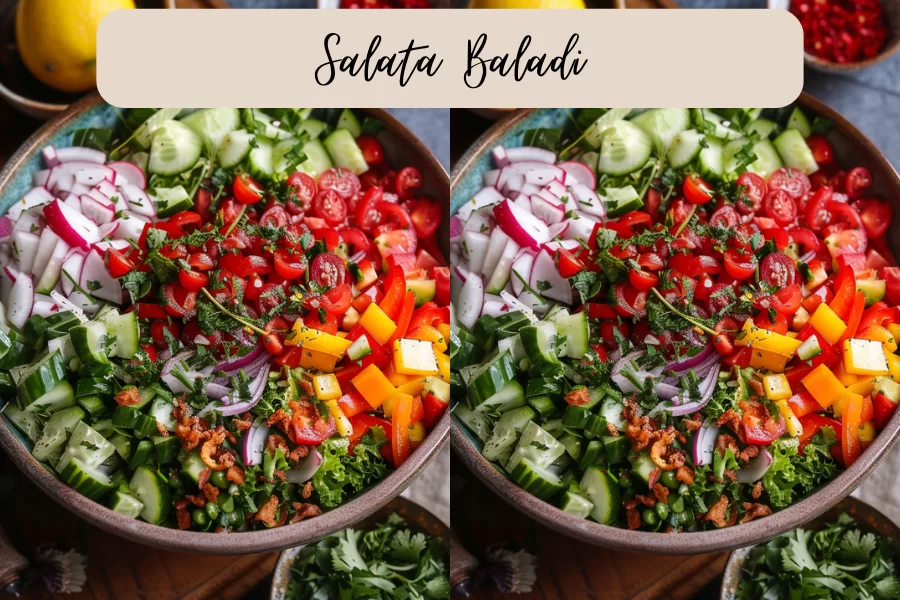

Main Menu
Salata Baladi (National Egyptian Salad)

Salata Baladi is a celebration of simplicity and freshness. The star ingredients typically include ripe tomatoes, crisp cucumbers, crunchy onions, and vibrant parsley. These elements come together to create a symphony of flavors, enhanced by a zesty dressing of lemon juice, olive oil, salt, and pepper. Some variations may incorporate additional herbs like mint or cilantro for an extra burst of freshness
Ingredients
- 4 ripe Roma tomatoes, diced
- 2 cucumbers, diced
- 1 small red onion, thinly sliced
- 1 cup fresh parsley, chopped
- 2 lemons, juiced
- 3 tbsp extra-virgin olive oil
- 1/2 tsp The Spice Girl Kitchen Egyptian Seasoning
- Salt and pepper to taste
Preparation
- In a large mixing bowl, combine the diced tomatoes, cucumbers, sliced red onion, and chopped parsley. If using any optional additions like feta cheese or herbs, add them to the bowl as well.
- Pour the dressing over the salad ingredients in the large mixing bowl. Gently toss the salad until all the ingredients are evenly coated with the dressing.
- Taste the salad and adjust the seasoning, if needed. Serve and enjoy!
Main Menu